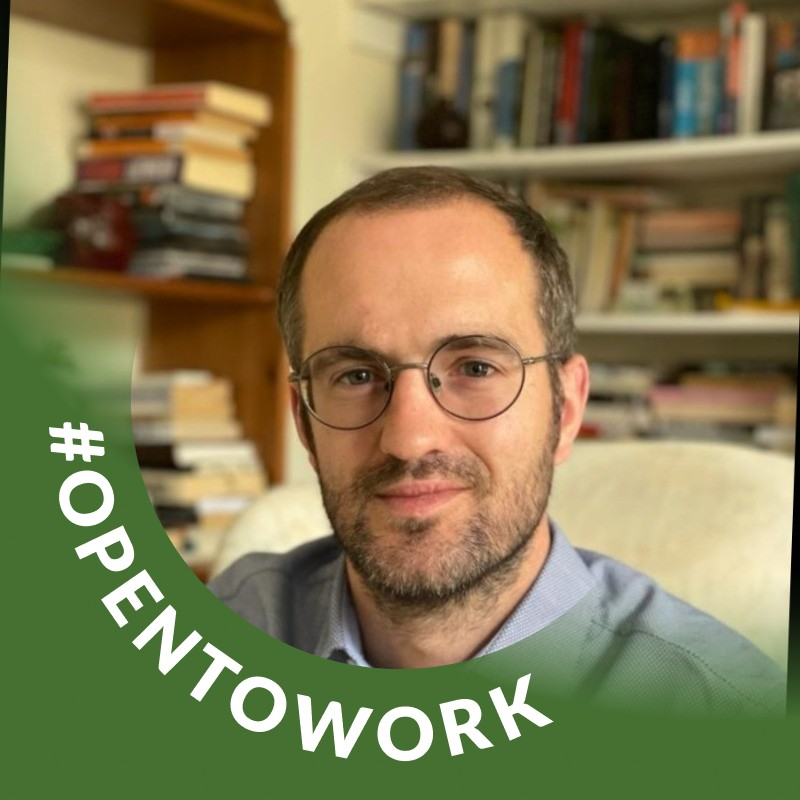

Social Risk
Human Rights Due Diligence
On-site HRDD and ESG assessments at industrial mines, processing facilities and integrated value chains across Africa and Latin America.
RJ Kent Consulting
Independent advisory on human rights, social impact and responsible business practice in the natural resources and energy transition sectors.
Independent Specialist Advisory
RJ Kent Consulting supports companies, investors, consulting firms, civil society organisations and multilateral institutions operating across natural resources, mining, mineral supply chains and the global energy transition.
Social Risk
On-site HRDD and ESG assessments at industrial mines, processing facilities and integrated value chains across Africa and Latin America.
Sustainability
Advisory at the intersection of responsible mining, mineral sourcing and the social dimensions of the global energy transition.
Stakeholder Relations
Strategic communications and mediation with communities navigating social grievances, resettlement and aspirational development.
Research & Policy
Field research, investigations and policy analysis for civil society organisations, companies and multilateral institutions.
About Richard Kent
Richard Kent is the Director and Principal Consultant of RJ Kent Consulting. His work spans industry, non-profit organisations and multilateral institutions at the intersection of natural resources, responsible business, human rights and sustainable finance.
His experience includes field-based human rights due diligence, ESG assessment, stakeholder engagement and social-risk analysis across Africa and Latin America.
Learn more about Richard →
Whether you are a private-sector company, consulting firm, non-profit organisation or multilateral body navigating social risk, let us discuss your project.